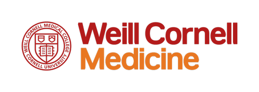
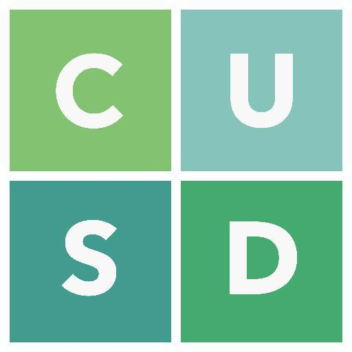
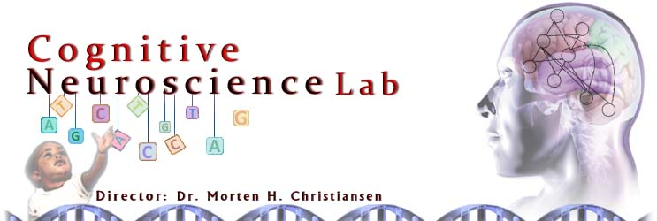
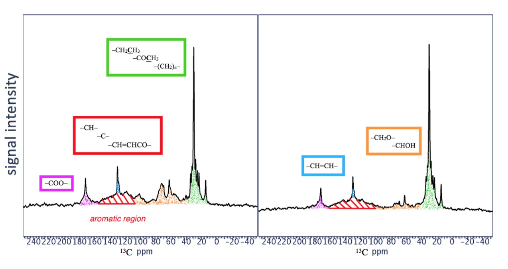

June 2018 - Present What: Developing innovative biomedical technology for the DEBUT competition. Currently: Working as an Operations Analyst to analyze materials, marketability, and patentability of the device.
Zendoscope
June 2018 - Present What: Start-Up Company Currently: Developing a cheap larygnoscope for low-resource countries.

Cornell University Sustainable Design (CUSD): Currents Subteam
September 2018 - Present What: Sustainable high-efficiency heating, ventilation, and air conditioning (HVAC) Currently:
Working with the Currents team to create high-efficiency heating, ventilation, and air conditioning (HVAC) sensors. Using technologies, such as machine learning, smartphone applications, data collection to develop a sustainable system for Cornell University.

Cognitive Neuroscience Lab
September 2018 - Present What: Aimed to understand evolution, acquisition, and processing of language. Currently: Assisting PhD students on their experiments with human subjects by coding and data analysis.

Past Work
Discovering Molecules that Contribute to Cryptococcus neoformans Virulence
Where: City College of New York When: July 2016 - December 2016 What: Dr. Stark's Lab in City College of New York Background:
I characterized the molecular architecture of melanized fungal cells by using NMR techniques. I won first place at the New York City Science and Engineering Fair and third place at JSHS competition.

K63 as a Regulator in the G1 Phase of the Cell Cycle
Where: New York University When: July 2015 - August 2015 What: Applied Research Innovations Science Engineering Program Background:
I researched on the regulation of ubiquitinated proteins during the cell cycle phases by using Western Blots. I presented the project with another student at a symposium in New York University.